Mohammed A. AlamMSAI 348: Intro to AINorthwestern University
"Artificial Intelligence"
The word artificial
Tools, forgeries, automata, software. “Artificial” is the boring half of the phrase.
The word intelligence
We do not have a clean test for it. We have competing stories: learning, reasoning, language, free will, consciousness, survival.
Who gets the label intelligent?
A boundary error
Psychology, math, neuroscience, linguistics, sociology — and, if you want a conversation that isn’t thin, philosophy and theology.
Another boundary error
ChatGPT is not AI.
Deep learning is not AI.
Machine learning is not AI.
They sit inside it. Symbolic methods still occupy the rest of the box. The field is older, and larger, than the current product cycle.
History, compressed
Before code
The field gets a name
Why this course exists
The combinatorial explosion is not a trivia fact. It is why intelligence — biological or artificial — cannot be “try everything.”
Winters
The turn
Classical AI tried to teach a computer how to do a thing.
Machine learning tries to endow it with the capacity to learn the thing from data.
Neither cancelled the other. We will do both.
1997
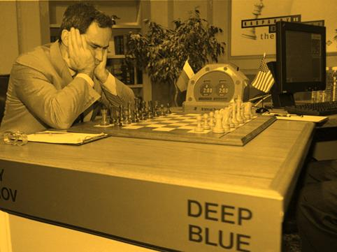
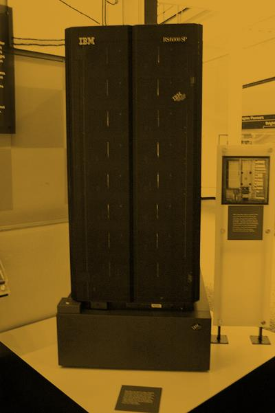
The last twenty-five years
Why you are here
How this course is built
Task-oriented. Five problems we will actually work.
Represent knowledge, then reason from it.
Treat decisions as search through a space of possibilities.
Plan a sequence of actions toward a goal.
Learn from observation — machine learning.
Take language as a first-class problem, not a UI.
Three words people throw around
Narrow. Good at a job. Most of what we will build, and most of what ships.
Human-level, general. A research horizon and a marketing term. Keep the two unconfused.
Beyond us. Worth reading about. Not this quarter’s homework.
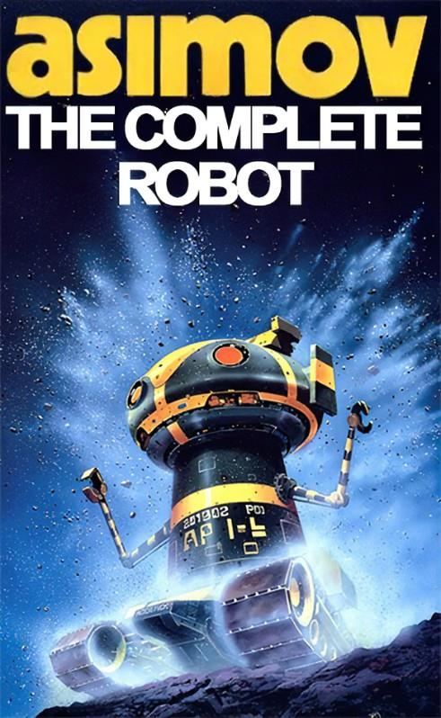
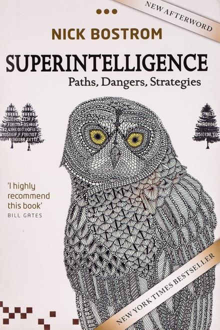
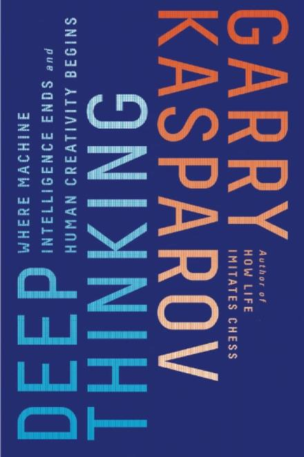
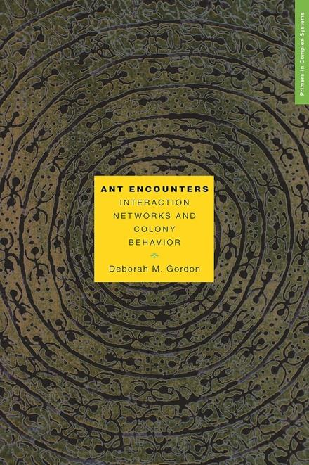
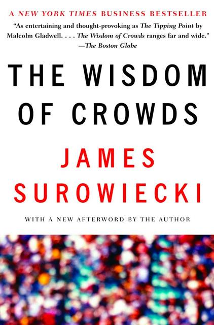
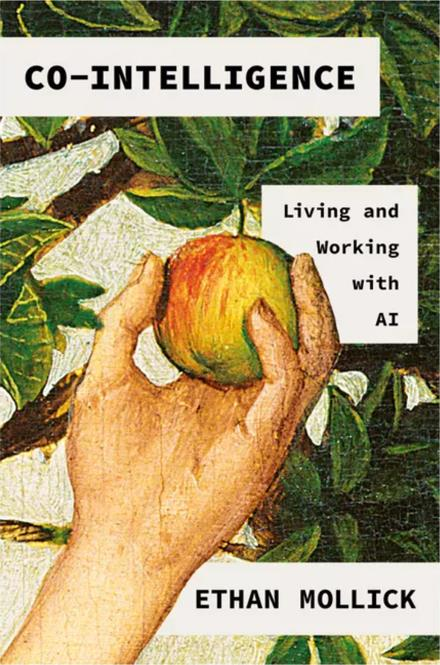
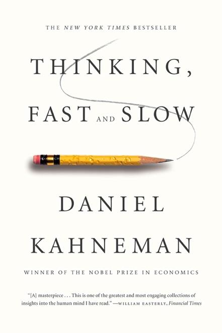
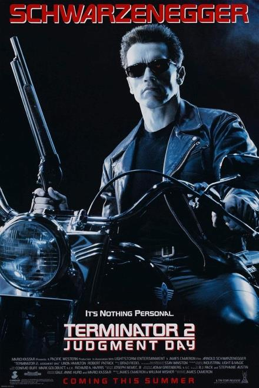
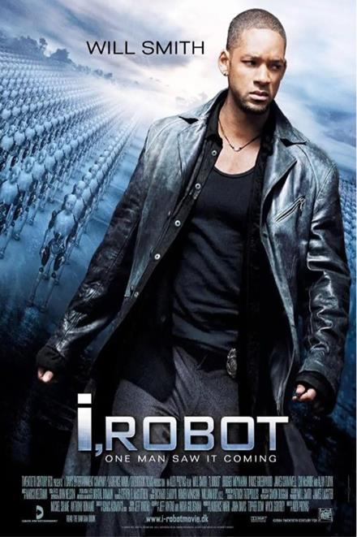
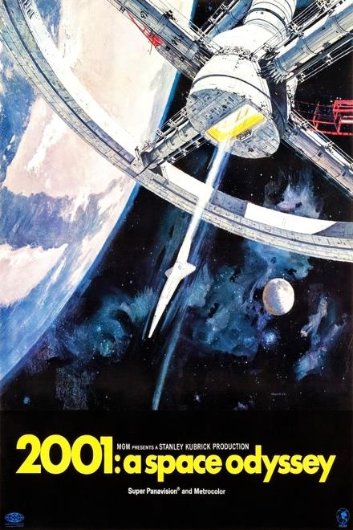
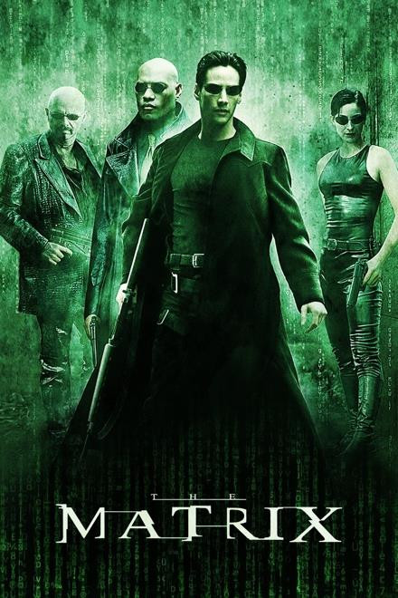
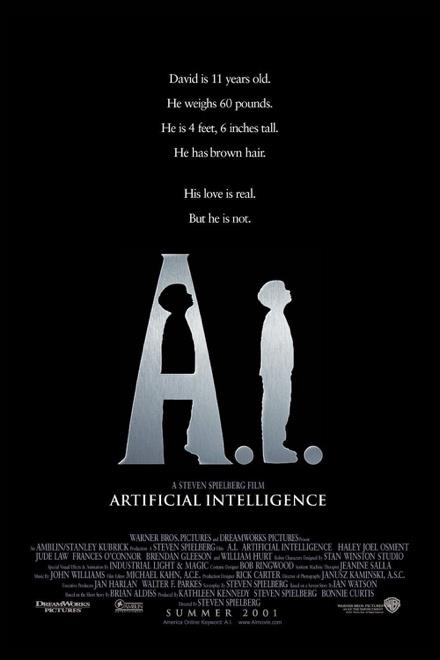
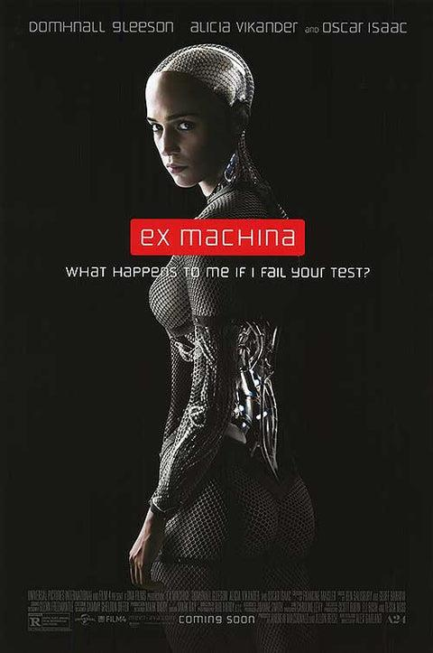
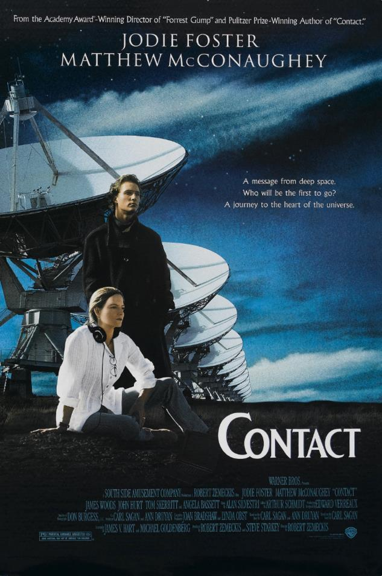
Not an AI movie. It is about making contact with a mind that is not ours — and about how little of that encounter is the math, and how much of it is us.